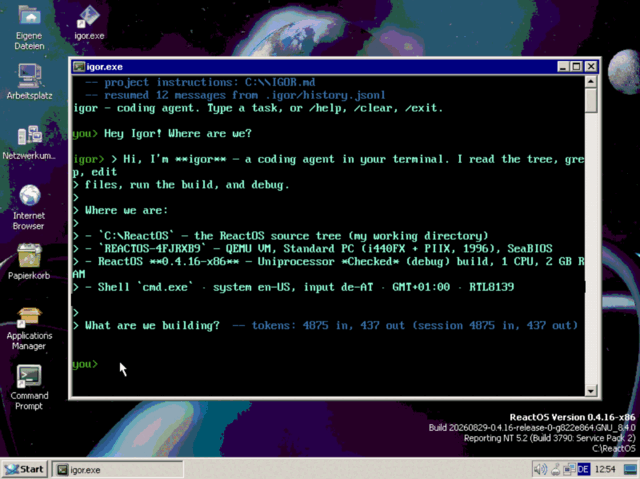

igorA small coding agent for Win32 / ReactOS, and for Linux.  igor on ReactOS 0.4.16. Download the latest release
These links always point at the newest release. The version is shown on the release page, and igor --version prints it. Running itThere is nothing to install. Put the file somewhere and start it. On the first run igor asks which provider to use and for an API key, then remembers the answers - so this works:
After that, igor on its own opens a chat, and igor "fix the bug in main.c" runs a single task. igor --setup changes the key later. Moreigor is MIT licensed. The binaries above are built from the tagged source by GitHub Actions. |